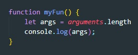
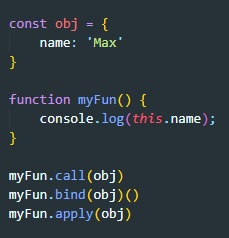

Синтаксис, который мы использовали до этого, называется Function Declaration (Объявление Функции):

Существует ещё один синтаксис создания функций, который называется Function Expression (Функциональное Выражение).
Оно выглядит вот так:

В чем ключевое отличие от эти двух способов. В первом случае (Function Declaration) мы можем использовать функцию в любом участке кода, даже перед тем как объявили функцию

В случае же с Function Expression мы можем обратиться к функции только после того как объявили функцию. К примеру вот такой код выдаст нам ошибку:

В консоли мы увидим такой лог:

Существует ещё более простой и краткий синтаксис для создания функций, который часто лучше, чем синтаксис Function Expression. Он называется «функции-стрелки» или «стрелочные функции»

…Такой код создаёт функцию func с аргументами arg1..argN и вычисляет expression с правой стороны с их использованием, возвращая результат.
Другими словами, это почти то же самое, что и:

Пример

Если у нас только один аргумент, то круглые скобки вокруг параметров можно опустить, сделав запись ещё короче:

Если нет аргументов, используются пустые круглые скобки (их указывать обязательно):

Многострочные стрелочные функции

Если число аргументов в вызове функции превышает число имен параметров, функция лишается возможности напрямую обращаться к неименованным значениям. arguments - это объект, подобный массиву, позволяющий извлекать переданные функции значения по их номерам, а не по имени.
arguments - имеет свойство length, которое отображает количество введенных аргументов
Что бы вызвать фнкцию fun (без аргументов) как метод объекта obj, можно воспользоваться любым из методов call, bind или apply
